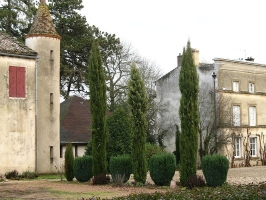
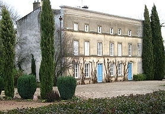
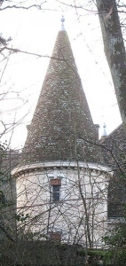
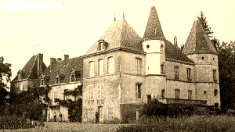
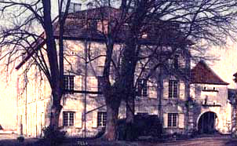

Recensement Jean-Claude Truffet





| Département | 71 — Saône-et-Loire |
| Canton | Sennecey-le-Grand |
| Commune | Boyer |
| Type d'édifice | Château |
| Période d'origine | XVI |
ARVOLOT; cité au XIIe siècle, fief du chapitre de Saint-Vincent de Chälon au XVIe siècle, transmit à la famille de Grenelle de Puymont, passa par alliance en 1666 à Jean Baptiste Larme pour aboutir en 1719 à Antoine Chapuis de Tournus dont descend le propriétaire actuel, ce château subit des transformations en 1810 et en 1842 le baron Ducret de Lange fait construire un logis en retour d'équerre de l'habitation et en 1869 construction de la chapelle utilisant une tour ronde pour le clocher, en 1900 devient la propriété de la famille de la Forest Divonne. PUYMONT; Famille de Vienne du XIIIe siècle par Hugues de Vienne, seigneur de Puymont, tient le château primitif Jusqu'en 1486 à la mort de Gérard de Vienne le château passa en 1515 à Humbert Lapyrat. En 1530, Jeanne de Verjus porte le fief par alliance à Philibert Quarré, puis à l'avocat mâconais Jean Pelez, puis passa à la famille de Grenelle par acquisition.
Au XVIIe siècle, le château est rebâti par la famille Aubel de la Genète. En 1741, Jeanne de Grenelle reçoit le domaine en dot lors de son union avec Antoine Aubel de la Genète et vers 1870, le petit-fils des précédents, ami de Lamartine, ajoute une aile de style néo-gothique. Passa aux de Rivérieulx, à la fin XIXe siècle, Marie-Suzanne Aubel épouse Marie-Jules de Rivérieulx de Varax. La première moitié du XXe siècle, Henri de Rivérieulx de Varax, leur fils, succède au XXe siècle. aujourd'hui propriété de M. de Goussencourt. VERNIERE; Étienne de Barrin de Champrond est propriétaire des lieux en 1408 et en 1568 la terre échoit aux Galland, le domaine est cédé comme bien national à un nommé Passaut. Au XIXe siècle, les héritiers du précédent revendent l'ensemble à Claude-Jules-Émile de Franc. En 1862 le précédent démolit le château et fait édifier la demeure actuelle qui passera par alliance en 1895 à la famille de Froissard de Broissia. La propriété passe toujours par alliance en 1956 à la famille des Boscs-Verneuil.
Arvolot. Dans la commune de Boyer, trois châteaux du XIIIe, du XIV et du XIXe siècle dont celui de Venière, de Puymont et une maison forte de St-LOUP du XIII-XVe siècle. Arvolot; Le château consiste en un édifice de plan en L formé d'un corps principal et d'une aile en retour d'équerre face à laquelle se trouve une construction rectangulaire à trois niveaux, des bandeaux règnent avec le sol des étages, un entablement couronne les façades et dissimule des toits très plats. Face à l'aile de 1810, se trouve une construction rectangulaire dont les murs sont légèrement talutés à leur base. Elle est percée d'une porte en plein cintre à encadrement en bossage rustique que surmontent, au-dessus d'armoiries ecclésiastiques martelées, les consoles à ressaut d'une bretèche. Le château de Venière à Boyer était composé de pavillons de diverses hauteurs, couverts de toits aigus, et entouré de jardins dont il reste une belle allée de tilleuls et un puit.
Le corps principal du château actuel, de plan rectangulaire, est flanqué de deux tours plus élevées d'un demi-étage, mais dépourvues d'étage de comble, elles sont coiffées de hautes toitures coniques.
Famille de Grenelle de Puymont
"
Château d'Arvolot, de Puymont et de Vernière